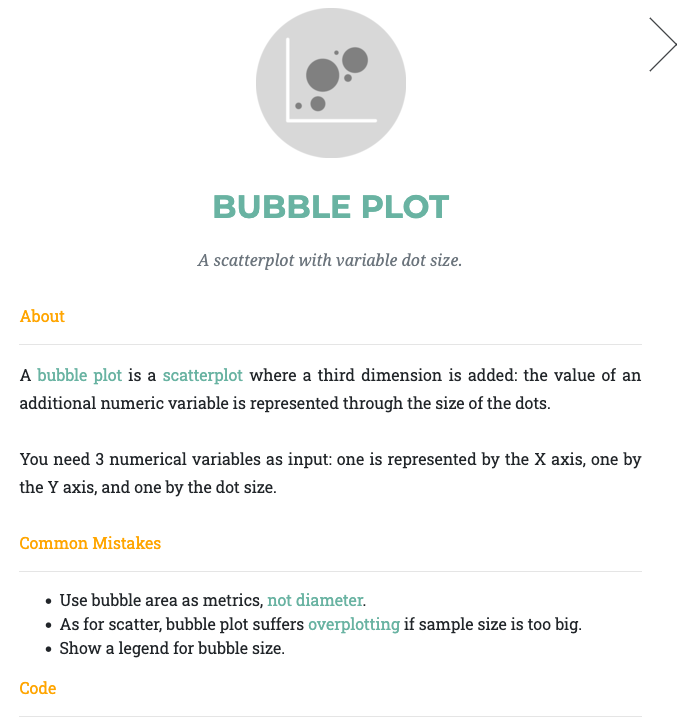

Exemplar visualizations - what far can we take it?
We’ve seen how to make ‘quick and dirty’ plots for ourselves. Now we will give you a glimpse of just how far you can take your visualizations. For this section we are looking at both code complexity and fundamental elements of design.
The aim of this section is to give you a set of resources that you can use to find examples and inspiration for your own work, as well as starting to look at elements of design.
Here we will provide guidelines on design and visualization while highlighting key examples from the scientific community. The good news is that there is an avid visualization community online - check out the 30 day chart challenge or the datavisualization hashtag on LinkedIn as a starting point.
From the community
Cédric Scherer
Cédric Scherer’s Data Visualization Gallery
When looking through this gallery, note that while some plots are very complex, they are built from basic elements. Each visualization is carefully designed: colour palettes are interesting but not overwhelming. There is adequate spacing between plot space and titles, axes, and text. Paler text (grey instead of black) makes overall images gentler. Cédric is a master of design as well as code, and all these visualizations demonstrate careful thought and planning.

This image comes from Cédric Scherer, and shows the relationship between the number of US Views and the number of votes on IMDb (a site that hosts voting on tv/movie quality). It looks like US viewers are heavy contributors in the IMDb voting system!
Key things to note about this visualization:
Use of a lower alpha value is a functional way to represent density. In addition to the wider scatter plot, there’s a clear pattern of higher density which probably contributes heavily to the overall trend line.
The colour scheme is eye-catching but not abrasive. In design/art this is called a monocolour (a single colour with white or black to modify the colour) - it’s highly cohesive and will generally be considered aesthetically pleasing. Note how the text uses the same colour, and the bolded text is also a colour found on the plot itself. The plot is probably using theme_minimal().
There is a hierarchy of black, with the title in black, the sub-heading in dark grey, the text below the chart in two separate light greys. This draws the eye to the top and guides the eye downwards. The two axis labels break from this, but only slightly, so that they stand out subtly - you can see them but they don’t distract you.
Text on the plot: this is not too common in scientific journal articles, but is a useful tool for science communication to a wider audience.
The gallery of Dr Nicola Rennie
Dr Nicola Rennie is a data visualization specialist and active community leader (note, the link can be used to find a list of Dr Rennie’s publications, and some of those offer in-depth run-throughs of visualization practices). Nicola has created a Shiny app to function as a gallery for all their 30daychartchallenge entries. Not only is this a stunning gallery with a wide array of chart types and top quality visualization ideas, but all of the code is available on github (to navigate to the R code: click on a given year (e.g., 2022), then click on scripts, then open the file for a given plot).
Excerise: Take a few minutes to explore Nicola’s gallery and make some observations about the charts. What do you like? Do you see anything you would do differently? Can you identify a use for one of these charts for visualizing your own data?
2024, Day 13 (Family) - very simple plot, the yellow-green is quite an interesting colour. Nice use of highlighting the female boxes in that colour and also having the text box share that colour. Good demonstration of a plot I would have been tempted to make in powerpoint.
2024, Day 1 (Part to Whole) - I love this colour scheme, but it’s not easy to tell what the three pink bars represent, and I wonder if this chart would have worked with median income on the Y axis (since we say “higher” income, having income on a vertical axis makes sense).
2024, Day 8 (Circular) - I understand that this colour scheme is picked to fit with the theme of Marvel comics, and I can see how it works with the original “X-MEN” logo, but I personally steer away from these bright yellows and reds, and while I find the yellow on dark blue text has high contrast, I wouldn’t describe it as easy to read.
2022, Day 1 (Part to whole) - This yellow on purple has slightly lower contrast but, at least to my eyes, is much nicer and easier to read.
Isaac Arrayo
Isaac Arrayo: towards data science
Isaac Arrayo gives us a breakdown of four plots from #tidytuesday (a community effort where people are invited to create visualizations of a provided dataset). We see four diverse plot types, the rationale for each plot, and how these plots might be applied to a more ‘standard’ dataset (i.e., an in-real-life example).
Resources and Showcase
A collection of resources - if you have any recommendations, reach out to me on LinkedIn or by opening an issue on github and I’ll add them here.
Galleries, books, workshops
The r-graph-gallery
The R graph gallery has a section on ggplot and it highlights some of the exciting features: custom fonts, pre-built themes, interactive plots - there’s a lot going on.
from Data to Viz
I highly recommend from Data to Viz as a resource for thinking about your data and what type of chart might be appropriate.

First, it shows a decision tree for each of the different data types (numeric, categoric etc.,). Within the data types you can look at plots for different subcategories (single numeric data, two numeric variables etc.,) and there is a “story” article for each subcategory that covers an example and explanations.

You can also click on a given plot type in the decision tree to open up a panel and view information about the plot type. Each plot also has a dedicated page that gives a full breakdown of the plot, explaining the required variables and some beautiful examples.
R for Data Science, 2E
The R for Data Science, 2E book (available free, online) is the go to resource for anyone learning the tidyverse, and it has a great section on ggplot2!
Summary
Elements of design, or the ability to create attention-capturing visuals, is not widely taught (in my experience) in the science sector, but there is a range of useful material and dialogue on visualization available to you. Remember that everyone will have their own personal preference, and it’s important to balance style with clarity. Simplicity is always going to be a powerful factor, and within a single document having a cohesive theme is key.